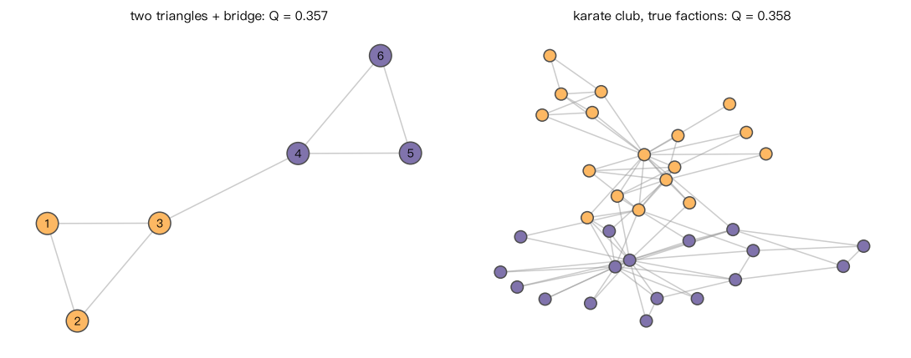
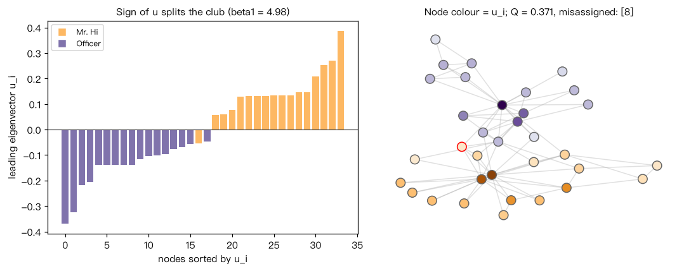
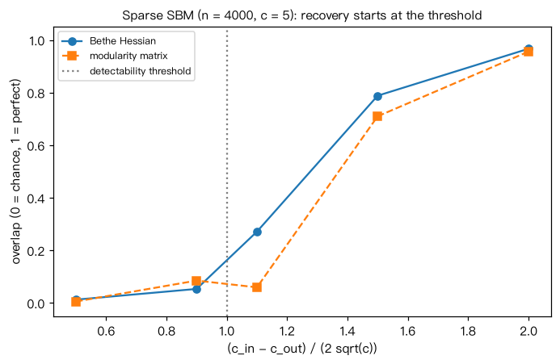
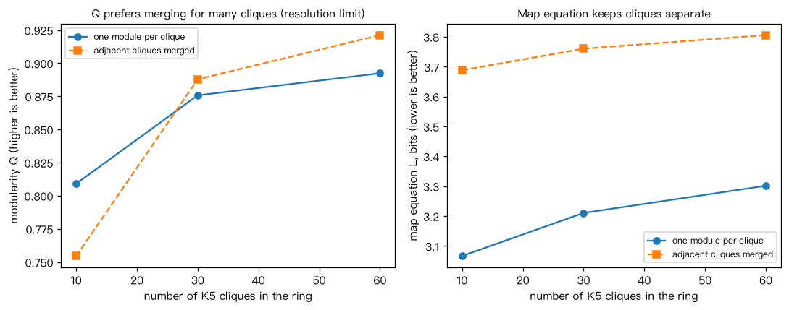
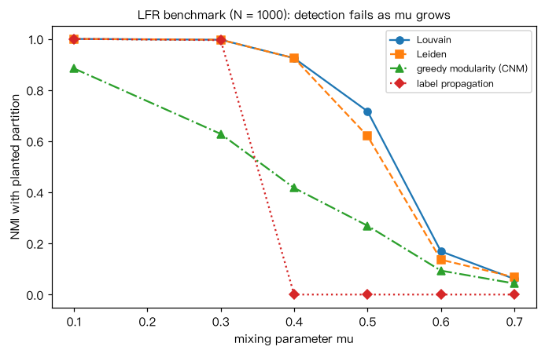
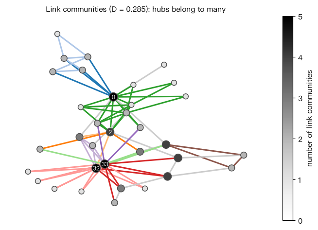

社团结构与社区发现
研究网络中内部紧密、彼此稀疏的节点群：模块度与随机块模型、主要算法、可检测性、结果评价与生物学验证。
网络结构指标与随机图和小世界与无标度网络模型研究的是网络的全局性质（度分布、平均路径）和局部性质（聚集系数）。介于两者之间还有一个尺度：网络常常由若干“内部连接紧密、彼此连接稀疏”的节点群组成，称为社团（community）或模块（module）。在蛋白质网络中，它们可能对应蛋白复合物和信号通路；在代谢网络中，对应相对独立的代谢子系统；在脑网络中，对应视觉、运动、默认模式等功能系统；在疾病网络中，对应疾病模块。
社团发现（community detection）看似只是“把节点分组”，但它同时牵涉三个不同层次的问题：什么算一个社团（定义与基本假设）、怎样找到它（质量函数与优化算法，或生成模型与统计推断），以及找到的东西可信吗（显著性、稳定性、可检测性与外部验证）。本专题按这个顺序组织：
- 从社会学的弱关系理论出发，理解社团为何存在，再给出社团的基本假设与形式化定义，说明可能的划分数目为何天文数字般巨大；
- 以模块度为中心介绍描述性方法：Girvan–Newman 删边法、Louvain 与 Leiden 算法、谱方法与层次聚类；
- 介绍两类“换一个视角”的方法：把社团看作生成模型参数的随机块模型与统计推断，以及把社团看作随机游走描述压缩的映射方程与 Infomap；
- 讨论社团发现的理论极限——可检测性阈值；
- 放宽“每个节点只属于一个社团、网络不随时间变化”的假设：重叠社团、多分辨率与共识聚类、多层与时变网络的社团；
- 最后是方法选择与结果评价：方法比较、划分比较与基准检验、社团结果的验证与解读。
各知识页面中的算法都在代码示例中有可运行的实现。
Contents知识页面
VIDEO讲解视频
文字稿
上世纪七十年代，一位人类学家观察了一个大学空手道俱乐部：三十四名成员，七十八对朋友关系。 画面上，每个点是一名成员，每条线表示两个人是朋友。 观察期间，教练和俱乐部的管理者闹翻了。俱乐部最终分裂成了两派。 我们想做的，是只看谁和谁是朋友，就事先猜出每个人会站到哪一边。 后来人们发现，单凭朋友关系，算法就能把两派分得八九不离十。蓝色是教练这一派，红色是管理者那一派。 网络里这种内部抱团、彼此稀疏的节点群，就叫社团。 这一期分三部分来讲。 第一部分，社团为什么存在，以及把网络分成社团有多难。 第二部分，怎样找社团：模块度，和几种常用的算法。 第三部分，找到的社团可不可信，以及它在生物医学里的用处。 先看第一部分。1973年，社会学家格兰诺维特，研究人们是怎样找到工作的。 他发现，帮上忙的，多是普通熟人，而不是亲密朋友。 画面上，左边蓝色圈子里，金色的这个人是你；右边绿色圈子里有一份工作的消息，沿着这条虚线，也就是一条熟人关系，传了过来。 原因在结构里。如果两个人都是你的好朋友，他们很可能也互相认识。所以强关系，总是嵌在三角形里。 这样一来，亲密朋友往往在同一个圈子里，知道的消息高度重叠。 而熟人更可能是连接不同圈子的桥，能带来圈子外的新信息。 于是网络呈现出这样的图景：内部紧密的社团，靠少数几条弱关系相互连接。 怎样把节点分成社团。最直接的想法，是把所有分法都试一遍。你看，五个节点，就能换出很多种分法。 下面这张图，横轴是节点数，纵轴是分法的数目，用对数刻度。灰线是二的节点数次方，金线是全部分法的数目。 分法的数目，增长得比指数还快：十个节点，有十一万多种分法；二十个节点，就超过五十万亿种。 所以只能靠一个打分标准，再加上聪明的搜索。 下面进入第二部分：怎样找社团。最常用的打分标准叫模块度。思路是：社团内部的边，应该比随机情况下预期的更多。 随机预期这样算：保持每个节点的度不变，把边全部打乱重连。两个节点之间预期的边数，正比于它们度的乘积。 模块度，就是实际落在社团内部的边的比例，减去随机情况下，预期落在内部的比例。 看公式：绿色这一项，是社团内部的边数，除以总边数；金色这一项，是社团里所有节点的度加起来、除以总度数，再平方，也就是随机情况下的预期。 看一个例子：两个三角形，中间一条边相连。按两个三角形来分，模块度约为零点三六。 全部放在一组，模块度是零；每个点单独一组，模块度是负的。 但是要小心：在一张完全随机的网络上，也能找到模块度不低的划分。 这张随机网络没有任何真实的社团，算法照样找到了模块度接近零点五的划分。所以模块度，必须和随机网络比较。 怎样找到好的划分。一种思路是反过来：一条一条拆掉社团之间的桥。 社团之间边很少，两边节点之间的最短路径，都得挤过这几条边。经过一条边的最短路径数，叫边介数。画面上，越红、越粗的边，边介数越高。 每次删掉边介数最高的那条边，重新计算，再删。 空手道俱乐部的网络很快裂成了两块。和真实的两派一比，只有画了圈的两个人，被分到了另一侧。 缺点是每删一条边都要重算一遍，只适合几千个节点以内的网络。 大网络常用另一种更快的办法。开始时，每个节点自成一组，所以颜色各不相同。 依次检查每个节点：如果把它搬到邻居的组里，能让模块度增加，就搬过去。你看右边的模块度，一路涨了上来。 等没有节点再动，就把每个组压缩成一个大节点，在缩小的网络上重复。 这就是卢万算法。几百万个节点的网络，它也能很快处理。 不过，它可能产生内部连接很差、甚至断开的社团。后来的莱顿算法加了一步细化，保证每个社团都是连通的。 最后是第三部分：找到的社团可不可信。先看一种情况：社团真的存在，但信号很弱。 我们用随机块模型来生成网络：先把节点分成两组，组内连边的机会大，组间连边的机会小。左边，每个节点平均有九点五条组内的边、零点五条组间的边，两个社团一目了然。 右边，组间连边变多了：组内七点二，组间二点八。组内连边仍然是组间的两倍多，两个社团却已经混成一团。 理论证明：组内和组间的差距低于某个阈值时，任何算法都无法比随机猜测做得更好。 公式左边，是组内和组间平均边数的差；右边，是组数乘以平均度的平方根。右边这个例子，差是四点四，阈值约是四点四七，正好落在阈值以下。 所以，算法没找到社团，不等于网络里没有社团结构。不是算法不够好，而是信息本身不够。 在生物医学里，社团往往对应功能单元，比如蛋白质网络里的复合物和通路。 在静息态脑功能网络中，社团划分和视觉、躯体运动、默认模式等已知的功能系统高度对应。 静息态，就是人躺在扫描仪里安静休息、不做任务的状态。 单细胞分析里，研究者先把相似的细胞连成近邻图，再运行莱顿或卢万算法，来定义细胞簇。 这时，分辨率参数直接决定分出几类。调低一些，得到四个大类。 调高一些，大类被拆成了十三个小类。 所以报告社团时，要检验它是否显著、是否稳定，并写清用了什么参数。 好，我们来总结一下。 第一，社团是内部紧密、彼此稀疏的节点群；模块度把它和随机预期作比较。 第二，随机网络也会被分出社团，所以结果要做显著性和稳定性检验。 第三，信号太弱时，社团无法被检测；参数的选择，决定了你看到的尺度。 这个专题的知识页面里，有画面上的这个交互演示。依次点击按钮，可以比较全部归为一组、随机分组、贪心优化和真实分裂的模块度。
INTERACTIVE交互可视化
CODE计算实现
15 个完整可运行的 Python 示例，每个都给出代码、输出图和解读；可在浏览器中直接运行，或下载 Jupyter Notebook · Python 脚本。

按定义计算模块度 Girvan–Newman 算法
Girvan–Newman 算法 Louvain、分辨率参数与随机网络的模块度
Louvain、分辨率参数与随机网络的模块度
谱方法——模块度矩阵的主特征向量 划分空间有多大——Bell 数与小网络上的穷举最优模块度
划分空间有多大——Bell 数与小网络上的穷举最优模块度 划分之间的比较——NMI、ARI 与信息变差（VI）
划分之间的比较——NMI、ARI 与信息变差（VI）
随机块模型与可检测性阈值 标准 SBM 与度修正 SBM（DC-SBM）在空手道网络上的最大似然划分
标准 SBM 与度修正 SBM（DC-SBM）在空手道网络上的最大似然划分
Infomap 的目标函数——两层映射方程（map equation） Leiden 算法、连通性检查与常数 Potts 模型（CPM）
Leiden 算法、连通性检查与常数 Potts 模型（CPM） 多分辨率扫描与共识聚类
多分辨率扫描与共识聚类
LFR 基准网络上的算法比较 节点在社团中的角色——模块内度 z 分数与参与系数 P
节点在社团中的角色——模块内度 z 分数与参与系数 P
重叠社团——团渗流（CFinder）与连边聚类（link communities） 时变网络的多层模块度与节点灵活性
时变网络的多层模块度与节点灵活性Papers论文精读
一组基于“介于性”的中心性度量
A set of measures of centrality based on betweenness
Freeman LC
用“一个节点落在多少对节点的最短路径上”来定义中心性，给出节点介数、标准化介数和整个网络的中心化指标。
社会网络与生物网络中的社团结构
Community structure in social and biological networks
Girvan M, Newman MEJ
提出按边介数反复删边的分裂式社团发现算法，在人工网络、空手道俱乐部和食物网等数据上找到了有意义的社团。
加权基因共表达网络分析的一般框架
A general framework for weighted gene co-expression network analysis
Zhang B, Horvath S
提出用“软阈值”把基因间相关转为连续连接权重，构建加权共表达网络，并把连接度、拓扑重叠、聚集系数推广到加权情形。
网络中的模块度与社团结构
Modularity and community structure in networks
Newman MEJ
把模块度写成模块度矩阵的二次型，按其主特征向量的正负号二分网络，得到快速而高质量的社团发现算法。
复杂网络中的同步
Synchronization in complex networks
Arenas A, Díaz-Guilera A, Kurths J, Moreno Y, Zhou C
系统综述网络拓扑如何影响同步：Kuramoto 模型的同步起点与路径、主稳定函数与可同步性及应用。
大规模网络中社团的快速展开
Fast unfolding of communities in large networks
Blondel VD, Guillaume J-L, Lambiotte R, Lefebvre E
提出“局部移动 + 聚合”反复迭代的模块度优化算法（Louvain），在上亿节点的网络上几小时内完成社团发现。
精神病理学网络分析中的模块控制
Module control of network analysis in psychopathology
Pan C, Zhang Q, Zhu Y, Kong S, Liu J, Zhang C, et al.
用最小支配集在模块尺度分析症状网络的控制关系，发现 2773 名大学新生中睡眠、压力模块结构上控制情绪模块。
References核心文献
Girvan & Newman 2002：Community structure in social and biological networks
- 出处：PNAS 99: 7821–7826。DOI：10.1073/pnas.122653799。论文精读：Girvan 2002
- 背景：传统的层次聚类从“最相似的节点”开始合并，容易把边缘节点孤立出来；作者转而从“最不像社团内部的边”入手。
- 核心发现：提出基于边介数的分裂式算法，在计算机生成的有社团网络上验证了效果；在空手道俱乐部网络上基本复现了真实的分裂；在科学家合作网络和海洋食物网中找到了有意义的社团。
- 阅读提示：本文尚未提出模块度（模块度在 Newman 与 Girvan 2004 年的论文中正式提出，Phys. Rev. E 69: 026113，DOI），注意作者当时如何判断“分到第几层”。对照阅读 2004 年的论文，理解模块度为何成为后来的标准。
- 思考题：边介数的计算依赖最短路径。如果网络是加权的（例如脑功能网络），应该怎样定义边介数？
Blondel, Guillaume, Lambiotte & Lefebvre 2008：Fast unfolding of communities in large networks
- 出处：Journal of Statistical Mechanics P10008。DOI：10.1088/1742-5468/2008/10/P10008。论文精读：Blondel 2008
- 背景：模块度最大化是 NP 难问题，已有的贪心算法在百万节点规模上太慢。
- 核心发现：提出“局部移动 + 聚合”的两阶段算法（即 Louvain 算法），在数百万节点的网络上几分钟内得到高模块度划分，并自然产生多层次结构。
- 阅读提示：注意作者对“中间层次划分也有意义”的讨论，这与分辨率极限有关；之后阅读下面的 Traag 等 2019，理解 Louvain 可能产生内部不连通社团的原因。
- 思考题：Louvain 算法中节点的访问顺序会影响结果。在你自己的研究中，你会怎样设计分析来报告这种不确定性？
Traag, Waltman & van Eck 2019：From Louvain to Leiden: guaranteeing well-connected communities
- 出处：Scientific Reports 9: 5233。DOI：10.1038/s41598-019-41695-z
- 背景：Louvain 被广泛使用，但它得到的社团是否满足“社团应当连通”这一最基本的要求，此前很少被检查。
- 核心发现：证明 Louvain 可能产生任意差的连接甚至不连通的社团，并在实验中观察到较高比例的连接不良社团；提出 Leiden 算法，通过细化阶段保证社团连通，迭代收敛后所有社团的所有子集都处于局部最优，且速度更快。
- 阅读提示：重点理解细化阶段为何能让“已经聚合的社团”在下一层被拆开；文中对模块度与 CPM 两种质量函数都做了实验。
- 思考题：如果一个算法保证社团连通，是否就意味着它找到的社团更“真实”？连通性与分辨率极限是两个独立的问题吗？
Fortunato & Barthélemy 2007：Resolution limit in community detection
- 出处：PNAS 104: 36–41。DOI：10.1073/pnas.0605965104
- 背景：模块度最大化被广泛使用，但它能识别多小的社团，一直没有系统分析。
- 核心发现：证明模块度存在一个与网络总边数相关的固有尺度，小于这一尺度的社团可能无法被识别，即使它们是完全连接的团；用“团组成的环”等例子说明了这一问题。
- 阅读提示：理解“团环”例子的构造和计算，这是理解分辨率极限最直接的途径。
- 思考题：一个包含 2 万个蛋白、30 万条相互作用的网络中，一个由 5 个蛋白组成的复合物有可能被模块度最大化单独识别出来吗？你会如何验证？
Karrer & Newman 2011：Stochastic blockmodels and community structure in networks
- 出处：Physical Review E 83: 016107。DOI：10.1103/PhysRevE.83.016107
- 背景：标准随机块模型假设同组节点度相同，用于度异质的真实网络时会按度而不是按社团分组。
- 核心发现：提出度修正随机块模型，给出只依赖划分的轮廓似然 ；在空手道俱乐部与政治博客网络上，度修正模型恢复了真实分组，而标准模型没有。
- 阅读提示：对照本专题推导 F，自己从泊松似然推出两种目标函数。
- 思考题：DC-SBM 的最大似然仍需预先给定组数。你会如何决定一个 PPI 网络应分成多少组？
Rosvall & Bergstrom 2008：Maps of random walks on complex networks reveal community structure
- 出处：PNAS 105: 1118–1123。DOI：10.1073/pnas.0706851105
- 背景：模块度只看连边密度，对于以“流动”为意义的有向、加权网络（如引文网络）未必合适。
- 核心发现：把社团发现表述为随机游走轨迹的最优压缩问题，提出映射方程及其优化算法（Infomap）；在大型期刊引文网络上得到了与学科划分相符的“科学地图”。
- 阅读提示：先在纸上为一个小网络的两种划分各设计一套码本，体会“短码可以在不同模块中重复使用”为何能降低描述长度。
- 思考题：信号转导网络是有向的。对它分别使用有向模块度和映射方程，你预计结果在哪些地方会不同？
Decelle, Krzakala, Moore & Zdeborová 2011：Inference and phase transitions in the detection of modules in sparse networks
- 出处：Physical Review Letters 107: 065701。DOI：10.1103/PhysRevLett.107.065701
- 背景：社团发现算法在什么条件下必然失败？这是一个与算法无关的信息论问题。
- 核心发现：用统计物理的空腔方法与置信传播分析稀疏随机块模型，给出可检测性阈值 ，并指出 较大时存在“可检测但计算困难”的区域。
- 阅读提示：对照本专题推导 H的启发式论证，理解阈值中 的来源。
- 思考题：一个实验测得的 PPI 网络平均度只有约 5。若其中的功能模块之间连接较多，你应如何解读社团发现“失败”的结果？
Peixoto 2019：Bayesian stochastic blockmodeling
- 出处：收于 Doreian、Batagelj 与 Ferligoj 编 Advances in Network Clustering and Blockmodeling（Wiley），pp. 289–332。DOI：10.1002/9781119483298.ch11
- 背景：随机块模型的最大似然无法自行确定组数，且只给出点估计。
- 核心发现：系统介绍以非参数贝叶斯方法推断 SBM 的框架：微正则模型、最小描述长度、嵌套 SBM、度修正、重叠与加权扩展、MCMC 抽样与模型比较。
- 阅读提示：这是一篇教程式的综述，配合
graph-tool文档中的示例阅读最有效；Peixoto 2023 的短书进一步讨论了描述性与推断性方法的区别。 - 思考题：在一个完全随机的 ER 网络上，模块度最大化与贝叶斯 SBM 分别会报告什么？为什么？
Data & tools相关数据与软件
Further延伸资源
| 类型 | 资源 | 说明 |
|---|---|---|
| 教材 | Barabási, Network Science, Ch. 9 Communities（networksciencebook.com/chapter/9，CC BY-NC-SA 2.0） | 免费在线教材：基本假设、层次聚类、模块度、重叠社团、社团检验、社团的刻画；Advanced Topics 含层次模型、模块度推导、Louvain 与 Infomap、团渗流阈值 |
| 公开课 | Stanford CS224W（主页） | 英文公开课，偏图机器学习；“强弱关系”与社团检测部分可与本专题对照，视频在 YouTube（需境外网络） |
| 综述 | Fortunato 2010, “Community detection in graphs”, Physics Reports 486: 75–174（DOI） | 社团发现领域最全面的综述，篇幅很长，建议按需查阅相关章节 |
| 综述 | Fortunato & Hric 2016, “Community detection in networks: A user guide”, Physics Reports 659: 1–44（DOI） | 面向使用者的指南：社团的定义、方法类别、验证与常见陷阱，比 2010 年的综述更易读 |
| 综述 | Peixoto 2023, Descriptive vs. Inferential Community Detection in Networks（Cambridge Elements，DOI） | 系统论述两类方法的区别及模块度的统计问题 |
| 综述 | Sporns & Betzel 2016, “Modular brain networks”, Annu. Rev. Psychol. 67: 613–640（DOI） | 脑网络中社团发现的方法与应用 |
| 方法论文 | Newman 2006, “Modularity and community structure in networks”, PNAS（DOI） | 模块度矩阵与谱方法，推导简洁；论文精读见 Newman 2006 |
| 方法论文 | Lancichinetti, Fortunato & Radicchi 2008, Phys. Rev. E 78: 046110（DOI）；Lancichinetti & Fortunato 2009, Phys. Rev. E 80: 056117（DOI） | LFR 基准网络的构造，以及在其上对多种算法的系统比较 |
| 方法论文 | Lancichinetti & Fortunato 2012, “Consensus clustering in complex networks”, Sci. Rep. 2: 336（DOI） | 共识聚类的算法与实验 |
| 方法论文 | Mucha et al. 2010, Science 328: 876–878（DOI） | 多层与时变网络的模块度 |
| 软件 | NetworkX 社团模块文档（networkx.org） | girvan_newman、louvain_communities、leiden_communities、k_clique_communities、modularity、LFR_benchmark_graph
等，配合本专题代码示例使用 |
| 软件 | leidenalg（文档） | Leiden 算法的官方实现，支持模块度、CPM、多层网络等多种质量函数 |
| 软件 | graph-tool（graph-tool.skewed.de） | 贝叶斯随机块模型（嵌套、度修正、加权、多层）推断的主要实现 |
| 软件 | Infomap（mapequation.org） | 映射方程与 Infomap 的官方实现、在线演示与教程 |
| 软件 | Brain Connectivity Toolbox（网站） | 脑网络常用的模块度、共识、参与系数与模块内 分数函数 |
| 经典数据 | Zachary 1977, 空手道俱乐部原始论文（DOI） | 了解这个“标准考题”的来历和实际的分裂过程 |
Open questions开放问题
- 在你的研究方向中，“社团”可能对应什么生物学实体（蛋白复合物、通路、细胞类型、脑功能系统、症状簇……）？如果你用社团发现算法得到了一个划分，你会用什么独立证据来验证它的生物学意义？
- 有人说“模块度最大化找到的社团，很大程度上取决于你选择的分辨率参数，所以社团发现是主观的”。你同意吗？请结合分辨率极限、稳定性分析和生物学验证，讨论怎样让社团分析的结论更可信。
- 你的网络更适合描述性方法还是推断性方法？如果用贝叶斯 SBM 得到“只有一个组”，而 Leiden 得到了 12 个模块，你会如何解读和报告？
- 对一个稀疏、存在大量未测相互作用的分子网络，怎样估计其中的社团结构是否处于可检测范围之内？可以设计什么样的模拟来回答这个问题？